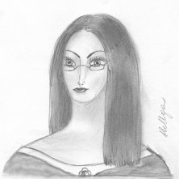

|
Agent Lambda in living color, looking relatively happy. Being a mildly neurotic, overworked PPC agent, she doesn't get to be completely happy very often. Besides, think how you would feel if you had to spend days in a row next to a very poisonous plant with a temper... |
|  |
Agent Lambda during her first mission, disguised as a stereotypical Noldorin Elf - pale, black-haired and grey-eyed. She looks in anger and shock at a Sue who was mutilating canon by being a completely adult (at 18) daughter of Finrod and Luthien. A quick pencil sketch, done in about 15 minutes. |
|
My second attempt at computer coloring. I don't know who it is, but she does seem evil. Perhaps, Thuringwethil in the form approaching human? Or one of the many Daughter-of-Sauron Sues? If you have an idea, let me know. |
|
|
Based on my university badge. If you are really want to know what is on the back of the badge and on the other page, I can tell you that the back of the badge has the list of most common poisons and the separate page is the Official PPC:SIELU Charge List for quick reference. |
{kind=link}
{kind=link}
{kind=link}